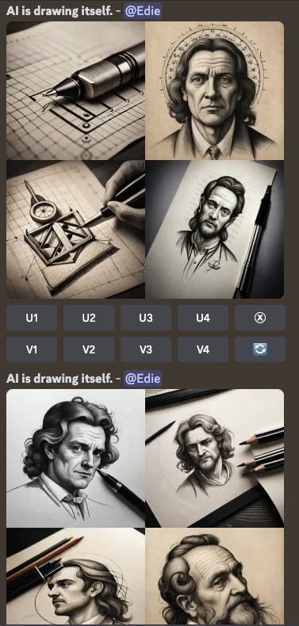

2023生成式AI演講，點亮未來新火花

走進AI的奇幻世界、探索新未來
✔ 你也好奇AI會如何影響我們的生活嗎？
✔ 你也對AI如何重新定義未來感到好奇嗎？
✔ 你也迫不及待想了解AI的未來發展嗎？
現在，讓我們一起跟著演講的腳步，探索更多、解開AI的魔法，讓AI成為我們的好夥伴吧！
2022年11月ChatGPT的誕生，掀起了AI新變革。2023年，AIGC的應用持續成為熱門話題之一，引起了廣泛的討論和關注，技術的應用仍在持續發展，其未來的應用場景和創新潛力仍然十分廣闊，人們正積極探索如何將AI術應用到更多、更具體的場景中，提升效率、創造價值與更好的用戶體驗。
同時間，也有一群人，不吝嗇分享AI的新知識、舉辦一場場精彩的演講，回顧2023上半年聽過的49場演講，關於AI主題就佔了三分之一，顯示人們對AI在商業、教育、生活及各領域應用的濃厚興趣和熱情。AI在商業中的應用正在重新定義工作方式，它可以幫助企業與受僱者優化工作流程、提高生產力和效率，同時強大的數據處理能力，能夠從龐大的數據中提煉出有價值的信息，幫助使用者做出更明智的決策或是創造更多新的商業模式和機遇。教育領域也迎來了AI的應用浪潮，它能夠根據學習者的學習風格和需求提供客製化的教育方案、並在過程中提供反饋和指導，幫助學習者更好地理解知識，提高學習成效。此外，AI在我們的日常生活中也發揮驚人作用，從日常的智能助理到醫療保健、金融管理、交通變革。相關的應用正在為人們的生活帶來了前所未有的機會和挑戰，
在演講中最常聽到的問題莫過於如何看待AI未來的發展？AI會不會取代受僱者？對於AI未來的發展，看法多種多樣。一些人擔心AI的普及會導致許多工作被取代，而另一些人則認為AI將創造新的工作機會並提高生產力。在眾多的觀點中，我最喜歡的說法是「AI是用來啟發靈感，省時而非替代」，在這樣的理念下，我們可以更充分地利用AI技術，進一步提高效率，實現更多創新。AI的應用對此時此刻的我來說更像是一種助力，能夠提供我們更多的資源、更多的洞察和創意、更高效地完成任務。也許未來的變化難以掌握，但十分感謝有這群講者願意無私分享AI當前的應用與Prompt咒語，也期待未來還有機會參加相關的演講，相信這些分享將能啟發更多人的興趣和參與、共享想法亦或是組建社群，並有助於推動未來的技術發展，並將其更廣泛地應用於生活中，為社會帶來更多的價值和便利。
精選演講推薦
1️⃣ ChatGPT 工作術：如何應用AI 增加工作效率 【講師】江舜智 (暱稱：紅色死神)
☞ ChatGPT協作技巧公開2️⃣ AI繪圖工作應用 【講師】郭佩奇
☞ 和ChatGPT、Midjourney展開精彩對話，延伸創作的便利與美好AI創作記錄分享

AI主題演講平台推薦
⛳️ 生成式AI創新學院 ☞ 由頂尖AI專家擔任講師，分享最新的AI知識
⛳️ 台灣人工智慧協會 ☞ 由業界前輩引領，開啟AI innovation Talk
AI相關書籍推薦
📗 AI生成時代：從ChatGPT到繪圖、音樂、影片，利用智能創作自我加值、簡化工作，成為未來關鍵人才 ☞ 了解生成式AI的趨勢與未來應用
AI相關影片推薦
☞ 取代你的不是AI，而是使用AI的人